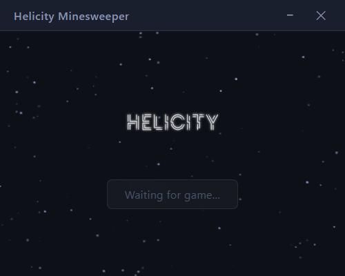
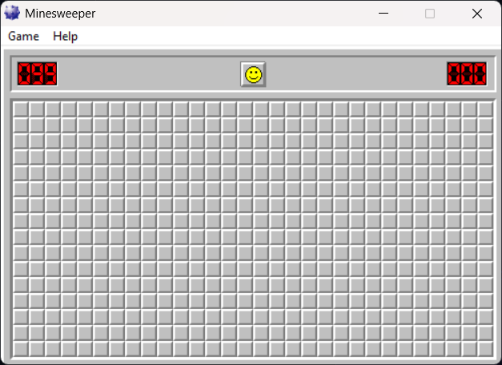

Head to the home page and click the large Download Helicity button.
Your browser will save a .zip archive to your Downloads folder.
Extract it anywhere — no installer required.

Open Minesweeper as you normally would. Helicity works with the classic
winmine.exe as well as the Microsoft Store edition.
Start a new game so the board is active — Helicity needs live board state to read from.

With Helicity attached, click Pause Timer to freeze the in-game clock. The Minesweeper timer will stop incrementing, giving you unlimited time to think through the board. When you're ready to continue, click Resume Timer to let the clock run again from where it left off.
Click Mine ESP to activate the overlay. Helicity reads the board state from memory and highlights every hidden mine with a coloured marker directly over the Minesweeper window. This lets you study mine patterns, verify your reasoning, or simply skip the guesswork on a difficult board.
The overlay updates whenever the board changes. Click Mine ESP again to toggle it off.
Click Play explosion sound to trigger the classic Minesweeper detonation audio at any time — great for reaction clips, stream highlights, or trolling friends watching over your shoulder. The sound plays through your default audio device.